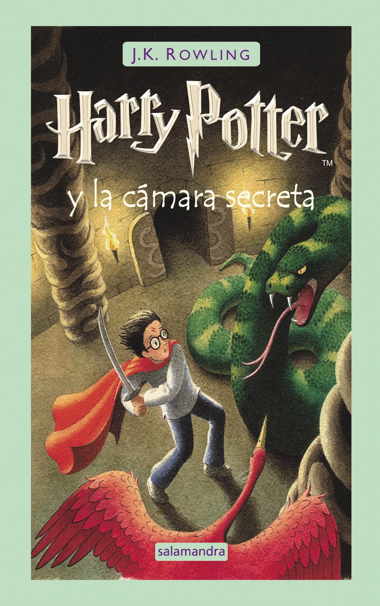
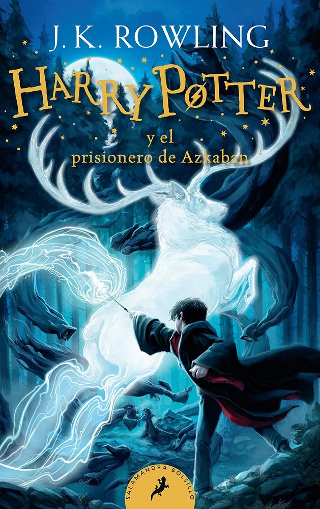
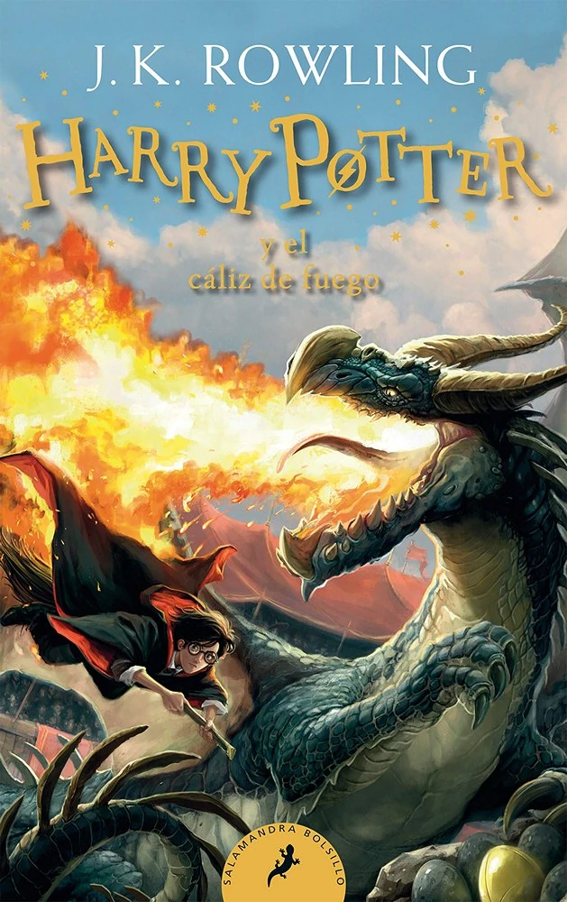
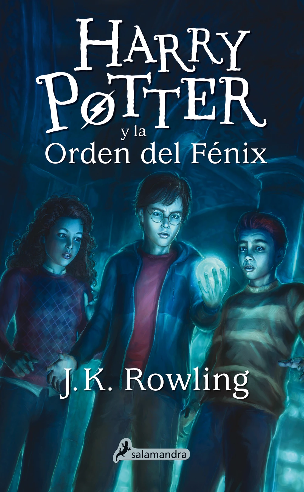
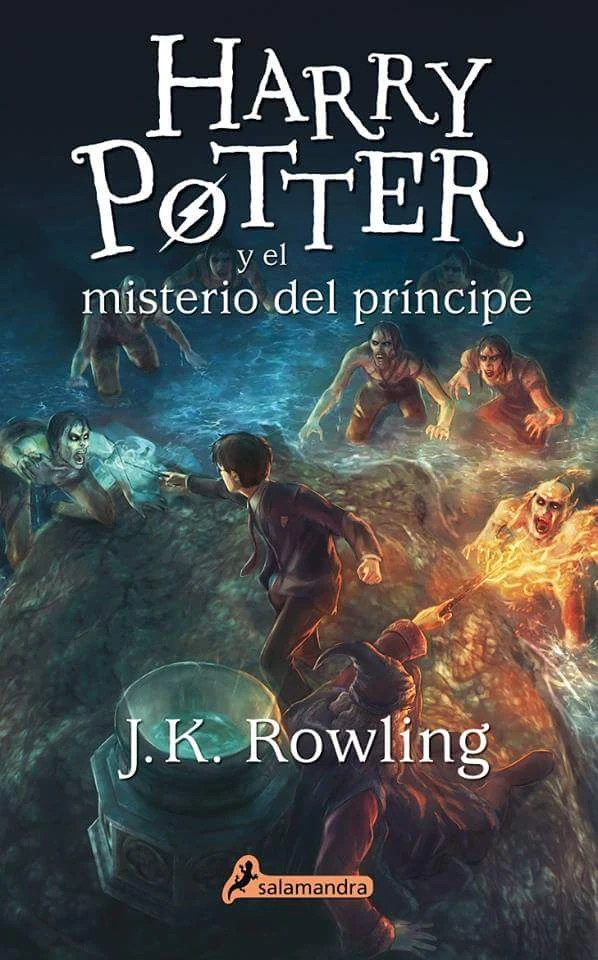
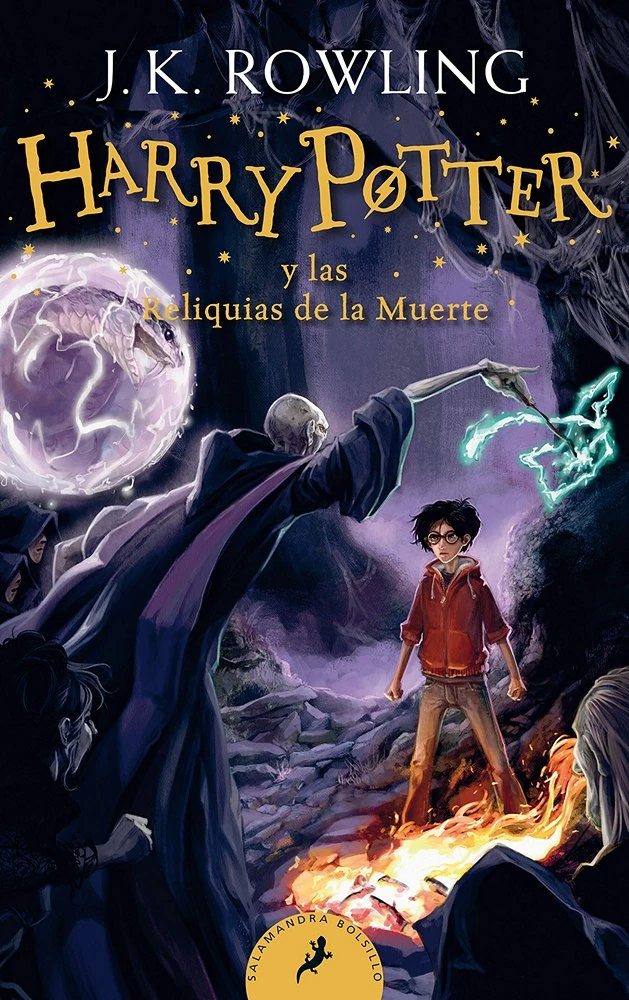
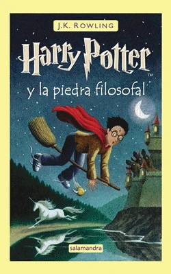

LOS LIBROS
Harry Potter y la piedra filosofal es el primer libro de la heptalogía acerca del joven mago Harry Potter, escrita por J.K. Rowling.
Salió a la venta el 30 de junio de 1997, y se hizo una película basada en el mismo en 2001.
Este libro es uno de los más vendidos y traducidos de la historia,
superado levemente por Don Quijote de la Mancha, de Miguel de Cervantes.

Harry Potter y la cámara secretaes el segundo libro de la serie Harry Potter escrita por J. K. Rowling.
El libro fue lanzado al mercado en 1998, y la película basada en éste salió en el 2002.

Harry Potter y el prisionero de Azkaban es el tercero de los siete libros escritos de la serie Harry Potter, por J. K. Rowling.
En este libro Harry ya tiene 13 años, y por primera vez en la serie comienza a haber rasgos de amor y odio.
La película muestra esto, aunque no es uno de los puntos más importantes del libro.

Harry Potter y el cáliz de fuego
es el cuarto libro de la saga tras otro abominable verano con los Dursley,
Harry se dispone a iniciar el cuarto curso en Hogwarts, la famosa escuela de magia y hechicería.

Harry Potter y la Orden del Fénix
es el nombre que lleva el quinto libro de la serie Harry Potter escrita por J. K. Rowling.
El libro fue publicado el 21 de junio del 2003 en el Reino Unido,
Estados Unidos, Canadá, Australia, entre otros.

Harry Potter y el misterio del príncipe
es el título con que se se publicó en castellano del sexto libro de la serie Harry Potter
Fue publicado en el año 2005, poco antes del lanzamiento de la cuarta película de la saga.
El libro dio datos importantes que tuvieron que tomar en cuenta antes de estrenar la película.

Harry Potter y las Reliquias de la Muerte
es el séptimo y último libro de la serie de novelas de Harry Potter.
La fecha de acerca. Cuando cumpla diecisiete años, Harry perderá el encantamiento protector que lo mantiene a salvo.
El anunciado duelo a muerte con lord Voldemort es inminente, y la casi imposible misión de encontrar y destruir los restantes Horrocruxes, más urgente que nunca.
Ha llegado la hora final, el momento de tomar decisiones difíciles.

Historia de la publicación
 Afectada profundamente por la muerte de su madre, con quien le unía una estrecha relación, Rowling se trasladó a Portugal, donde convivió con un periodista, ejerció como profesora de inglés y tuvo una hija, Jessica, que ahora tiene nueve años. Es a ella a quien debió explicarle cantidad de veces el porqué de su decisión de cambiar el calor y el sol de Portugal por el frío y la nieve de Escocia, donde se trasladó después de tres años y el fracaso de su relación amorosa. Si es por rédito económico, poco habría que explicar sobre lo acertado de esta decisión.